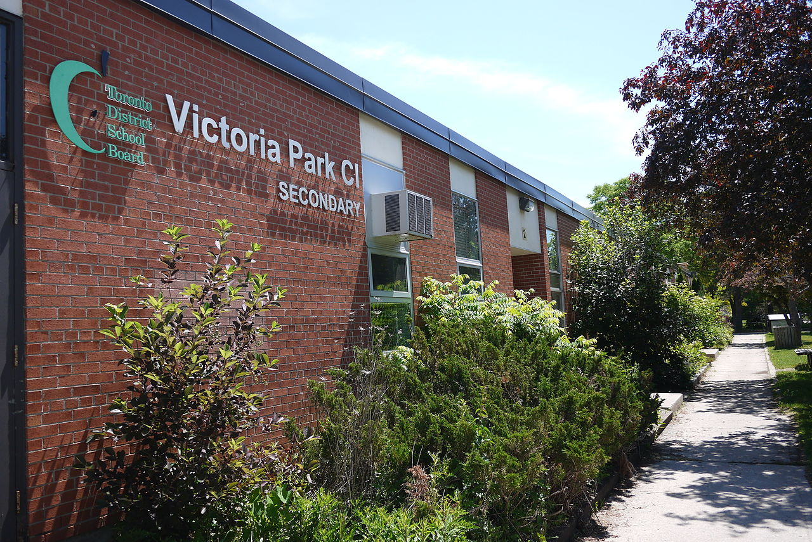

| Victor's Website |
|---|
About Me |
| About Me |
| My Cats |
| Hobbies |
| Gaming |
| References/Citations |
|
Author: Victor Zhang, Date Published: 11/17/20 Who am I?My name is Victor Zhang, I am 14 years old, and I go to Victoria Park Collegiate Institute. I was born in Toronto, Canada on September 7th, 2006, My parents immigrated from China and we currently live in the town of North York. There really isn't much to know about me besides having 2 cats named Evan and Vanoss or Playing way too many video games. I live a semi-normal life even though at the time I'm writing this we're in the middle of a global pandemic (COVID-19), I go to a good school and have good friends. I don't have any special hobbies in particular and spend most of my days inside doing schoolwork or playing games. I don't really have a goal in life, I'm just seeing where my life is going and following that path.ChildhoodGrowing up in Toronto lead to a pretty peaceful life, my parents were pretty strict be that a good or bad thing but it allowed me to cruise through elementary and middle school with good grades and some awards. In the middle of all that my favourite subjects included science and music. I played the recorder (a plastic wind instrument that you can play notes by covering certain holes when you blow) in elementary and the trombone in middle school. I was good at it so I joined the school band. In elementary making friends wasn't all that hard, everyone was equally oblivious to social boundaries and followed the same mindset, have fun, and listen to adults. But in middle school is where my mind opened up, my peers seemed to be ignorant and not willing to learn causing many disruptions and moments when I wish I actually tried during that gifted test back in elementary (I was tested if I should move to a school with smarter kids but failed due to me not knowing it was important). This caused me to seek friends of a different mindset which included many (if not all) the kids from the gifted classes and a very small group of kids who also wanted to learn in my class. The classes in that middle school would usually consist of lessons about things that I already knew or things that I could process much faster than the others, this made me agitated at the education system causing me to pay less attention in class and categorize people which isn't a nice thing to do but it's what got me through school without straying from my main path. I began gaming more in middle school since my mom should never let me download anything on the computer due to things like "It might have a virus" but I was smart enough to evade things like that so I downloaded one and that provided the necessary happiness outside of school. In grade 7 I was able to be in a close group of friends with 3 girls 2 boys and me. I always had this one friend who wasn't exactly doing well with his or her grades but the group was a lot more cheerful when they were around, this group lasted 2 grades until the beginning of highschool. Where I then joined Victoria Park and it's IB Programme.What I'm doing NowI'm in my 9th grade at Victoria Park Colligiate Institute and in the middle of a pandemic I'm trying to balance work and happiness, with a mix of in school and at home/virtual learning every day feels pretty much the same, staying at home all day or not being able to interact with people and make friends due to social distancing restrictions. That was my life up until now but feel free to keep exploring! Victoria Park Collegiate Institute, Photo: PFHLai, Find the photo here |